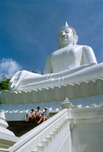
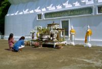

|
Samedi 5 mai
Petite toilette dans l’avion. Il y a un kit parfait! Eau de cologne qui sent
bon, petite crème pour les mains et produit à la menthe super fort pour bains
de bouche! Même de l’après rasage... On se sent propre comme des sous neufs
et pleins de bonnes senteurs malgré nos habits gris de poussière.
En fait, c’est ce que nous pensions, mais dans la voiture d’Isa et Jeremy venus
nous chercher à l’aéroport, ils ont bien vu que nous n’étions pas tout frais.
Nous voilà donc à Bangkok dans le superbe appartement d’Isa et Jeremy, les camarade
d’école de Marion mais aussi nos collègues de voyage en Indonésie et au Pérou.
Quel choc après l’Inde. Bangkok est une ville vraiment très développée, très
proche des villes occidentales. Ici, les voitures ne klaxonnenent pas pour un
"oui" ou pour un "non", elles roulent chacune dans leur voie et celles-ci existent
vraiment: il y a des lignes blanches peintes sur la route. Pratiquement aucun
vélo, des motos et mobylettes mais essentiellement des voitures. Beaucoup d’immenses
immeubles et de tours très modernes. Bangkok fait davantage penser à New York
qu'à Paris. Il n'y a pas de bâtiments anciens, seulement du neuf.
Bref, on a changé de monde. En plus, on vit la ville de façon plutôt luxueuse:
superbe appartement, piscine, voiture et ... bonne bouffe! Le supermarché en
bas de l’immeuble (hé oui!) est une véritable caverne d’Ali Baba. On peut y
trouver pratiquement tout , et notre premier repas en Thaïlande est très...
thaïlandais: un petit camembert fabriqué en France, le "Gérard", pas mauvais
même s’il est en conserve (on aura tout vu), jambon cru, jambon fumé, salade
verte et, le clou du spectacle, un vrai pâté "fait maison", le tout accompagné
d'un petit vin du sud ouest. Et en plus, Isa et Jérémy ont fait les choses en
grand: champagne au bord de la piscine, quel rêve! C'est beau la Thaïlande!
Dimanche 6 mai
C'est le week-end! Cela fait plus de 3 mois que cela ne nous préoccupe plus
beaucoup, week-end ou semaine, on ne voit plus trop la différence. Mais aujourd'hui,
ce n'est pas pareil puisque nous allons visiter un bout de la Thaïlande avec
nos camarades. En plus, lundi est jour férié. On prend donc la voiture direction
le parc ntional de Khao Yai, à deux heures au Nord Est de Bangkok, près de Pak
Chang. Mais avant cela, arrêt à mi-chemin pour la visite de notre premier boudha.
Il est blanc, assis et gigantesque. C'est même le plus grand boudha assis de
Thaïlande, ça ne rigole pas. Planté dans la montagne, nous pouvons l'admirer
après la montée des 600 marches qui y mènent! Ca monte dur et les marches sont
géantes. Ca se mérite, un bouddha!
Le soir, nous nous régalons sur le marché de Pak Chong. En fait, si une petite
partie ressemble à un marché classique, la grande majorité des étals proposent
des plats cuisinés, prêts à l'emploi, que les thaïlandais –qui paraît-il ne
cuisinent pas beaucoup- achètent en grandes quantités. On y trouve toutes sortes
de brochettes (poulet, bœuf, poisson, grenouilles…), des nems (frits), des rouleaux
de printemps, des desserts. Un paradis pour les yeux et pour le palais, la cuisine
thaïlandaise est vraiment fine et pleine de saveurs.
Lundi 7 mai
Végétation luxuriante, verte et exhubérante, lianes, bambous et multiples plantes
géantes dans tous les sens. Bref, c'est ce qu'ils appellent la forêt vierge
dans les guides. Nous suivons un cours d'eau, nous accrochons aux lianes, traversons
un précipice d'au moins un mètre sur un tronc d'arbre couché, voyons un gros
poisson, un gros iguane (ou un varan, on ne sait pas trop) qui fait l'air de
rien, un mille-pattes géant de bien quinze centimètres, un joli oiseau (le même
qu'à Chittwan qui vole bizarre) et plein de singes rigolos dont un qui voulait
nous apostropher: "hé! hé!?". Pendant la balade (environ deux heures) on a croisé
quelques cyclistes en sueur qui portaient tout le temps leur vélo vu l'état
du sentier (arbres renversés, descentes abruptes, racines énormes partout).
Par contre, une fois au bout, les thaïs étaient super nombreux à se baigner
dans la jolie cascade!!! On pouvait venir en voiture et on nous l'avait caché…
Retour en stop dans un pick-up couvert ET climatisé! Trop cool. Puis retour
sur Bangkok dans les embouteillages des jours fériés...
Suite du voyage : Métro, bâteau... Wat Pho
|
Thailande
Bangkok
|

Thailande
Pak Chong (vers)
|

Thailande
Pak Chong (vers)
|
|
|